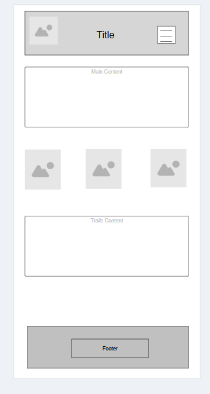
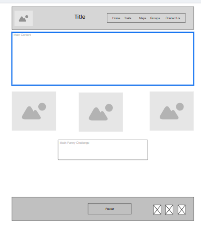

Winter Trails – This name was chosen to reflect the site's focus on hiking throughout the colder months, as well as year-round. It evokes a calm, natural setting and seasonal exploration.
Domain availability: wintertrailsguide.com
The purpose of Winter Trails is to inspire people to get outdoors and explore local hiking trails. The site will provide trail descriptions, gear advice, safety information, and weather updates using dynamic features such as JSON and public APIs. The goal is to make it easy and fun for users to discover safe and enjoyable hiking opportunities.
Chosen colors for the website:
Mobile View (Home Page):
Desktop View (Home Page):
